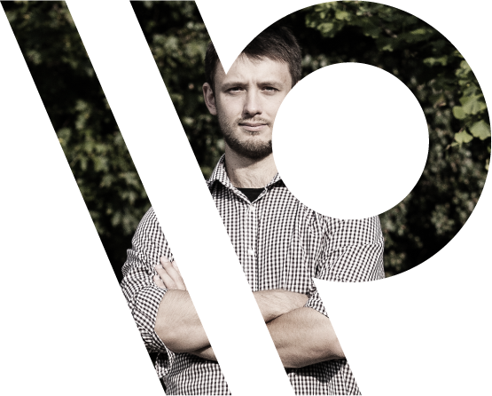
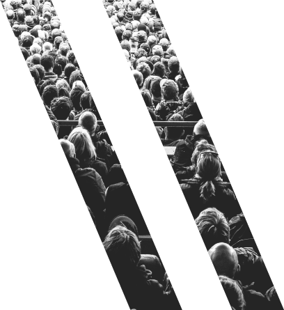

Retoryka nie jest sztuką, retoryka jest Warsztatem, którego można się nauczyć. Jak się tego nauczyć? Tylko poprzez doświadczenie. Dlatego Warsztaty Retoryczne są ciągiem nowych wyzwań, nowych doświadczeń, symulacji, konfrontacji i wnikliwego feedbacku. To właśnie poprzez odpowiednie ćwiczenia pokonamy strach przed przemawianiem i publicznością, opanujemy chaos myśli w głowie, nauczymy się wygrywać dyskusje i tłumaczyć się z błędów. To właśnie ten Warsztat sprawi, że Twój głos będzie słyszany i dobrze zapamiętany.
\\\ Najbliższy kurs od 05. 05. 2019
Po co?
\\\ improwizacja
Co zrobić, gdy czasu nie ma, a trzeba przedstawić siebie, produkt, opinię, dane? Trzeba improwizować, ale trzeba wiedzieć jak, aby było to przekonujące, pewnie powiedziane i logiczne.
\\\ krótko i treściwie
Po prostu nie ma czasu, do rzeczy i konkret. Jak ułożyć myśli i wybrać to, co najważniejsze.
\\\ pod presją
Łatwo jest rozmawiać przy stole z rodziną, ale w sytuacji jeżeli od tego zależy to czy zdobędziesz klienta, przekonaz do swojej racji albo do siebie, albo możesz wystawić się na pośmiewisko, bądź gdy masz przed sobą tłum ludzi z negatywnym nastawieniem a szef chce konkretu, bo nie ma czasu - to jest właśnie ten moment kiedy jest trudno. Warsztaty są o tym, jak sobie w takich sytuacjach radzić.
Jestem z wykształcenia prawnikiem, specjalistą od kontaktów z mediami. Mam za sobą wiceprezesurę w jednym z największych polskich think tanków - Fundacji Republikańskiej. Prowadzę Warsztaty Retoryczne od 8 lat, pracowałem jako członek zespołów negocjacyjnych, pisałem ustawy jako prawnik legislator w Sejmie RP, inicjowałem i koordynowałem kilkanaście projektów analitycznych (w tym “Kierunki Promocji Polski dla MSZ, “Wolność słowa w Internecie” we współpracy z Google Polska i wiele innych). Prowadziłem szkolenia medialne dla Mediatorów oraz okazjonalnie współpracowałem z TedX Warsaw. Prowadziłem szkolenia dla różnych branży od dziennikarzy, poprzez IT, HR, do kandydatów na stanowiska publiczne oraz przedsiębiorców. Zdarza mi się komentować obecną sytuację polityczną i gospodarczą jako publicysta.

Dla kogo?

\\\ dla firm
jak zadawać pytania, aby się dowiedzieć czego naprawdę potrzebuje klient, oszczędza to czas i pieniądze
jesteś w IT i masz pracowników o wrażliwym podejściu do siebie
każdy ma doświadczenie spotkań na których wszystko się strasznie wlecze, a na sam koniec pada pytanie “czy ktoś ma jeszcze pytania?” i nagle się ktoś zgłasza i wiecie, że spotkanie potrwa jeszcze długo - o tym jak sobie z tym radzić
jak mówić o produkcie i o sobie innym głosem niż pani z infolinii
łatwiejsze rozwiązywanie konfliktów
jak chwalić ludzi
jak działać w sytuacjach kryzysowych i tłumaczyć wpadki
jak mówić i dobierać informacje dla zarządu, zespołu, sprzedawców i mangerów.
\\\ dla klientów indywidualnych
gdy trzeba przemawiać do grupy ludzi - jak się przełamać,
jak mówić, aby przekonać i kogo trzeba przekonywać
jak myśleć krytycznie i improwizować,
refleks w dyskusjach, tak aby nie myśleć później - a mogłam/em coś powiedzieć
jak dojść do słowa
jak prezentować pomysły, idee i opinie - szybko i żeby były zapamiętane
\\\ dla freelancerów
jak tłumaczyć to czym się zajmujesz
jak wyjaśnić, że to że jesteś freelancerem nie znaczy, że jesteś bezrobotny, radzenie sobie z uprzedzeniami